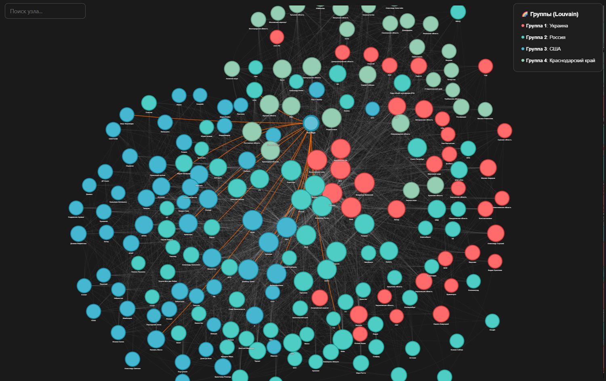

Избранные проекты
От поиска скрытых закономерностей до работающих инструментов. Здесь — что я делаю и как.
Сегментация сотрудников после реструктуризации
Задача
HR-директор группы компаний и директор по организационному развитию после масштабной реструктуризации (>100k сотрудников, массовые переподчинения) хотели понять, как люди пережили трансформацию. Изначальный запрос звучал размыто — «посмотреть бы, что там с людьми». Я предложил конкретный образ результата: выделить группы риска и дать HRBP инструмент для точечной работы.
Метод
Работа шла в пять этапов:
- Feature engineering. Собрал датасет из разных таблиц SAP HANA: цифровой след сотрудника, соц.-дем. атрибуты, профессиональные характеристики. Ключ — сотрудник.
- Отбор факторов. Сравнил две известные группы — уволенные и оставшиеся — по десяткам параметров. Через статистические тесты и байесовские методы выделил 12 ключевых переменных, значимо различающих группы.
- Кластеризация. На уволенных за 2 года опробовал иерархические методы, k-means, HDBSCAN, DBSCAN, гауссовскую кластеризацию. DBSCAN оказался устойчивее в 12-мерном пространстве. Grid search подобрал гиперпараметры.
- Интерпретация. Ручной анализ 5 полученных групп по 12 факторам. Две ключевые: «неудовлетворённые» (негативная оценка и руководителем, и подчинёнными) и «готовые уволиться завтра» (цифровой след + опросы).
- Классификация. Разметил действующих сотрудников по группам риска. Проверил предсказательную силу через деревья решений (Random Forest, XGBoost, LightGBM).
Результат
В подразделениях, где HRBP отработали по группам риска, — статистически значимый рост удержания по сравнению с подразделениями без такой работы (оценка квартальная). Модель жила на локали: я прогонял сотрудников сам и возвращал HRBP результат.
Главный эффект — переход от адресной работы с ключевыми сотрудниками к управлению пулом риск-факторов. Обнаружены неочевидные связки факторов (например: молодой возраст + наличие детей + невысокий оклад → повышенная устойчивость к изменениям). Организационные изменения теперь сразу отражаются на карте рисков.

Дашборд проблемных доставок
Задача
Запрос от CEO и финансового директора: доставки — слабое место компании, они генерируют убытки (политика компании — возить за свой счёт, даже если клиент не прав). Оценки потерь были приблизительные и собирались разово. Нужен был инструмент, который раз в сутки показывает реальную картину: сколько и почему теряем.
Метод
Оркестрировал процесс сборки витрины: от ТЗ до валидации. Исходные данные лежали в 1С и грязном слое ClickHouse — около 8 источников. Инженеры собирали руками по моим спецификациям.
Спроектировал логическую модель: связал рейсы и доставки (один рейс → несколько доставок), разложил финансовые потери по категориям причин — складские (ошибка сборки) и логистические (объём машины, водитель). Валидировал витрину, согласовал методологию с заказчиком — удерживал фокус на ключевой цели: видеть все потери, а не только те, где есть виновный.
Дашборд — 4 вкладки в DataLens + кастомные чарты на D3.js. От помесячной статистики до детализации по конкретной доставке и водителю.
Результат
Дашборд показал: недополученная прибыль и прямые убытки — ~1 млрд руб/год. Провёл демо на руководителей всех складов, СЦТ и логистов — в режиме онлайн отвечал на их вопросы, настраивая фильтры под задачу: «сколько конкретно мой склад потерял из-за ошибок сборки?».
Результат: руководители на местах начали работать с утилизацией рейсов; директор по логистике запустил расшивку причин на складские и логистические; инициирован общекорпоративный проект оптимизации цепочек (greenfield + симплекс-методы). Дашборд на проде, работает без ручного участия.

NLP-анализ стенограмм колл-центра
Задача
Клиентский сервис пришёл после того, как увидел решение аналогичной NLP-задачи для HR (анализ опросов вовлечённости за 7 лет). Беспокоило: путь пользователя в процессе возврата может быть неочевидным, что создаёт негативный опыт. Во время звонка клиент может поставить 10 из 10, а в комментарии написать «у конкурента лучше». Нужно было извлечь смысл из стенограмм, а не из цифр опросов.
Метод
Разово обработано около 300 стенограмм за несколько месяцев. Развернута квантованная модель Qwen на локали — никаких внешних API, всё внутри компании. Промпт задавал роль, контекст, задачу, примеры и требования к формату ответа + требование на перепроверку.
Стандартная предподготовка текста: нормализация, очистка. Модель извлекала сущности, боли, плюсы и минусы, определяла общую тональность. Изначально тем выделилось больше, но предметный эксперт свёл их к 12 устойчивым. Процесс — Human-in-the-Loop: человек валидировал решения модели.
NPS считали по оценке, которую клиент давал в начале звонка, в разбивке по выделенным темам.
Результат
Передал в отдел качества: файлы с разметкой комментариев по темам, презентацию с основными выводами, гипотезами и точками внимания, описание методологии. Найдены очевидные проблемы в процессе возврата — запущена полная пересборка процесса.
Модель HITL показала: AI отлично справляется с задачами извлечения смысла из неструктурированного текста. Писать в десять раз больше кода на то, что уже решено — не нужно.

Pet-проекты
То, что я делаю для себя — потому что не могу не исследовать.
HH Analytics — исследование рынка вакансий
Автоматизированный сбор, очистка и визуализация данных о вакансиях аналитиков с HeadHunter. Ансамблевый классификатор чистит «мусорные» вакансии (точность ~76%), зарплаты пересчитываются в рублях с учётом курса ЦБ и прогрессивной шкалы НДФЛ. Дашборд в DataLens с кастомными JS-чартами.
Анатомия новостной повестки «Газеты.Ru»
Независимое исследование структуры новостной повестки: 20 000 статей за 38 дней, 98 авторов, 11 рубрик, 34 561 именованная сущность. Граф совместной встречаемости, кластеризация (Louvain), анализ центральностей, стилометрия, поиск скрытых нарративов. Четыре кластера, колебательный ритм повестки, двойная бухгалтерия рубрик.

Обсудим ваш проект?
Напишите мне в Telegram — расскажите, что болит. Посмотрим, можно ли на это ответить данными.
Написать